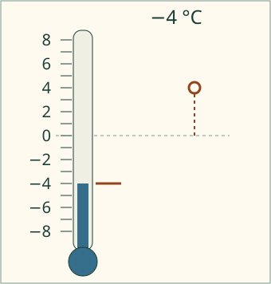
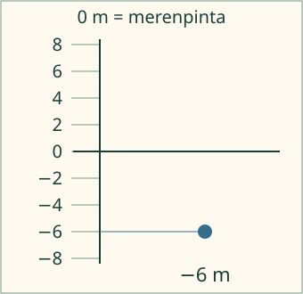

Aavan mittari.
Laske yksi aste. Missä nolla on?
Ilman JavaScriptiä: 3 asteesta lasketaan 2, 1, 0, −1, −2. Mallissa nollan ohittaminen jatkaa samaa tasaista asteikkoa.
Lue lämpömittarin lukema tai käytä sovittua nollakohtaa. Kirjoita lukema etumerkkeineen.
Aava lukee lämpömittaria. Mitä tapahtuu luvuille, kun pinta laskee nollan alapuolelle?
Lukuja myös nollan alapuolella
−4 on negatiivinen luku: neljä yksikköä nollan alapuolella. 4 ja +4 ovat sama positiivinen luku. Nolla ei ole kumpaakaan.
Sama etäisyys, eri puoli

−4 °C on neljä astetta nollan alapuolella. 4 °C on neljä astetta sen yläpuolella. Esimerkiksi −8 °C on kylmempi kuin −2 °C: mittarissa se on alempana.
Nollan paikan pitää olla tiedossa

Negatiivinen ei tarkoita aina pakkasta. Kun sovitaan merenpinta nollaksi, sen alapuolinen korkeus on negatiivinen. Sama kuuden metrin etäisyys yläpuolella merkittäisiin +6 m.
Miinusmerkki vai vähennyslasku?
Luvussa −4 merkki kuuluu lukuun: se kertoo puolen nollasta. Lausekkeessa 7 − 4 merkki kertoo vähentämisestä. Vastaluku −4 ei tarkoita, että ensin pitäisi vähentää neljä jostakin piilossa olevasta luvusta.
Ennusta: jos mallin lukema on 1 °C ja se laskee kaksi yhden asteen askelta, kummalle puolelle nollaa päädyt? Alla oleva mittarimalli alkaa lukemasta 1. Kokeile sen painikkeilla.
Tutki yhden asteen lähtötilannetta
Malli on ilman JavaScriptiä alkuperäisessä kohdassaan: avaa mallin kohta.
Lisää tutkittavaa
Alla oleva mittarimalli alkaa nollasta. Avaa ”Lukema, vastaluku ja toisto” ja näytä vastaluvun kohta. Nollan vastaluku on nolla. Kokeile sitten −7: sen vastaluku on 7. Merkkien välinen etäisyys on silloin 14 yksikköä, vaikka kummankin etäisyys nollasta on 7.
Tutki nollaa ja vastalukua tässä
Malli on ilman JavaScriptiä alkuperäisessä kohdassaan: avaa mallin kohta.
Lopuksi: merenpinta on 0. Minkä merkkinen korkeus on kolme metriä sen alapuolella? Kerro myös, miksi nollan paikka on tärkeä.
Opettajalle ja kokeilu paperilla
Luokat 3–6. Nolla on vaadittu esitieto, lukujen järjestys vahva tuki. Piirrä lämpöasteikko, merkitse nolla ja liikuta paperimerkkiä yksi yhtä suuri väli kerrallaan. Aloita luvusta 3 ja jatka nollan yli. Merkitse toiselle paperille merenpinta nollaksi ja vertaa korkeuksia. Nollakohta on sidottu suureeseen ja sovittuun asteikkoon.
0 °C ei tarkoita lämmön puuttumista eikä ole alin mahdollinen lämpötila. Piirros on malli, ei näytön fyysinen mittari tai todellinen sää havaintopaikalla. Toiston tahti on esitystahti, ei luonnon lämpötilan muutosaika. Negatiivisten lukujen laskusääntöjä, vektoreita tai koko järjestämistaitoa ei arvioida tässä. Malli ja harjoitus ovat erilliset; apu ei täytä vastausta. Paikallinen palaute ei todista fyysistä mittarin lukua, itsenäistä hallintaa, säilymistä tai oppimistulosta. Ei henkilötietoja tai oppilastallennusta.